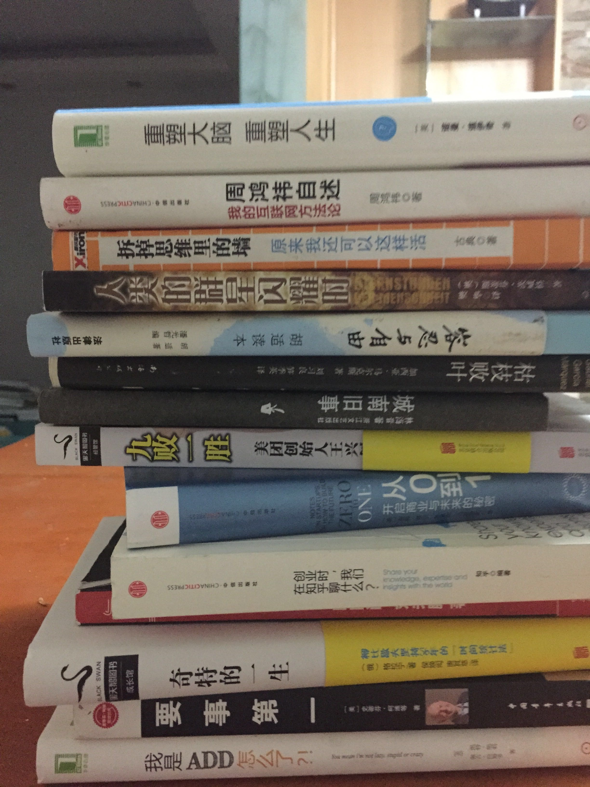

<!DOCTYPE html>
<!--[if IEMobile 7 ]><html class="no-js iem7"><![endif]-->
<!--[if lt IE 9]><html class="no-js lte-ie8"><![endif]-->
<!--[if (gt IE 8)|(gt IEMobile 7)|!(IEMobile)|!(IE)]><!--><html class="no-js"><!--<![endif]-->
<head>
  <meta charset="utf-8">
  <title>
    
  每天进步一点点-送书活动 - 徐梦阳的博客
  

  </title>
  <meta name="author" content="">
  <meta name="description" content="怯懦的人只会埋葬自己">

  <meta name="HandheldFriendly" content="True">
  <meta name="MobileOptimized" content="320">
  <meta name="viewport" content="width=device-width, initial-scale=1">
  
  <link href="asset/css/screen.css" media="screen, projection" rel="stylesheet" type="text/css">
  <link href="atom.xml" rel="alternate" title="sjpsega's Blog" type="application/atom+xml">
  <script src="asset/js/modernizr-2.0.js"></script>
  <script src="asset/js/jquery.min.js"></script>
  <style type="text/css">
  .cat-children-p{ padding: 6px 0px;}
  </style>
  <script type="text/javascript">
  var isAddSildbar = true;
  </script>
  <script src="asset/js/octopress.js" type="text/javascript"></script>
</head>
<script type="text/javascript">
//链接新开窗口
function addBlankTargetForLinks () {
  $('a[href^="http"]').each(function(){
      $(this).attr('target', '_blank');
  });
}
$(document).ready(function(event) {
  addBlankTargetForLinks();
});
</script>
<body   >
  <header role="banner"><hgroup>
  <h1><a href="index.html">徐梦阳的博客</a></h1>
  
    <h2>怯懦的人只会埋葬自己</h2>
  
</hgroup>

</header>
  <nav role="navigation"><ul class="subscription" data-subscription="rss">
  <li><a href="atom.xml" rel="subscribe-rss" title="subscribe via RSS">RSS</a></li>
  
</ul>
  
<form action="http://google.com/search" method="get">
  <fieldset role="search">
    <input type="hidden" name="q" value="site:42wolf.github.io" />
    <input class="search" type="text" name="q" results="0" placeholder="Search"/>
  </fieldset>
</form>
  
<ul class="main-navigation">
  <li><a href="index.html">Home</a></li>
  <li><a href="archives.html">Archives</a></li>
</ul>

</nav>
  <div id="main">
    <div id="content"> <div>
	<article class="hentry" role="article">
	<header>
			  	<h1 class="entry-title">每天进步一点点-送书活动</h1>
				<p class="meta"><time datetime="2015-05-01T22:40:02+08:00" pubdate data-updated="true">2015/5/1</time></p>
			 </header>
		  	<div class="entry-content">
			  	<h2 id="toc_0">为什么要进步</h2>

<p>梦阳君作为一个从农村家庭出来的孩子，自毕业以后来到互联网这个行当以来，便深深的爱上了这个行业，那时我在我的个人博客里写到：</p>

<blockquote>
<p>昨天签了五年的合同。如果不出意外的话，下个月就能转正了。本来我已经习惯了不对别人或别的事情抱有太大的希望，但的确不得不说美团给了我足够多的意外和惊喜。至少于我来说，如同打开了潘多拉魔盒看到了能够窥探的魔法球，看到了更宽广的更大的世界，我来到这里的目的算是达到了</p>
</blockquote>

<p>可能是出于人生前将近二十年未见过世面造成自卑的一种补偿反应，我对在如何找到能够自己不断进步的方法这个问题上耗费了大量的时间和精力。但因为从小扎根在自己身上的坏习惯很难改掉，做一件事情总是很难做到让自己满意，然后又去反思和挣扎，又去尝试，可还是不够满意，工作两年来，始终觉得自己没有什么太大的进步，觉得自己在原地打转，反反复复痛苦不堪。但是我一直都对如何”让自己变得更好”这一点上念念不忘，然后还带着逃避的心情特地写了篇博文<a href="#comment1"><sup>1</sup></a>：</p>

<blockquote>
<p>仔细看了下自己既往以来写过的博文，于是就会想，既然我有写过”总想变得更好”，就应该践行自己的承诺，从目前来说，我做的还远远不够，总的来说，我是没有资格宣扬自己『总想变的更好』这句话的，因为我是个没有节操的人，我根本没有坚持过自己的信念，我该怎么办，似乎问题也总是没有答案， 后来想明白了，该吃吃，该喝喝，想做什么就立马去做，没有必要想太多给自己压太多想做却做不来的事情，于是反而觉得挺不错的。</p>
</blockquote>

<p>然后我又忿忿的在博文里面提到：</p>

<blockquote>
<p>这段时间我又想明白一个很残酷的事实，一切因为愚蠢和懒惰而造成自己命运凄惨的人，都不值得同情，大家都是成年人，在独自面对困境的时候，厮杀还是逃避，每个都需要做出自己的决定，并承担决定的后果，最后，买单。</p>
</blockquote>

<p>这种挣扎的状态持续到现在，终于稍微有了一些改观，我觉得我现在迫切的需要解决这个困扰了我多年的问题，才能让我达到一个新的目标。我觉得这个过程记录下来一定会非常的有意思，便尝试去做一下试试，于是便有了这篇文章。</p>

<h2 id="toc_1">关于如何进步</h2>

<h3 id="toc_2">我的想法</h3>

<p>大家都知道，持续的进步是一个非常困难的事情，因为往往要提升某一个方面的技能/心智水平，一两次的简单练习都是不够的，很多事情都需要大量时间的刻意练习以后才会有效果，比如说编程。但是，我们的动物本能却最期望是，做一件事情，立马就会有反馈，比如说撸管。这就导致了一个矛盾了，做一件有意义的事情，如果没有即时的反馈，就不想去做，而有及时反馈的事情，却往往都不是能够对你长远有好处的事情。李笑来曾经在《把时间当做朋友》里面提到，要尽量的去做没有及时反馈的事情，而往往真正能够真正的提高你，让你能够与众不同的，就是哪些一两次练习没有结果以后你放弃掉的事情。蔡志忠就说过这样一句话：这样持续下去，长此以往，我们便陷入了先有鸡还是先有蛋的怪圈，得不到任何的进步了。</p>

<blockquote>
<p>人生就象走阶梯，每一阶有每一阶的难点。无法克服难点，再怎么努力都只能在原地跳，毫无进展.</p>
</blockquote>

<p>关于进步这一点，我就立刻想到了自己在学习电子的时候想到的一个词：电子跃迁，一个电子只有吸收到一定的能量级以后，才会跃迁到另外一个能量级上，而没有达到那个能量值的时候，电子总是保持自己原来的状态不变的。你看看，这个和我们的进步理论是多么的相似，只有不断的获得能量，才能让自己达到更高阶的能量级！</p>

<p>那么，如何去降低达到这一目标的能力呢？关于这一点，我立马想到的是：<br/>
1、再多坚持一会儿<br/>
2、把一个看起来很遥远的目标拆分成几个关键的点</p>

<h4 id="toc_3">多坚持一会儿</h4>

<p>我们来看第一个，再多坚持一会儿，关于坚持这个方面我尝试过很多事情，但实际的实践过几次以后，我便对自己坚持的能力不抱任何信心了，半年前我在博客里反思的时候说过：</p>

<blockquote>
<p>我目前做了这些事情：坚持每天早起（7天，已经停了）、坚持每天写一篇blog（大学的时候坚持过一个月，现在停了，现在甚至都不能保证每个月一篇了ಥ_ಥ）、坚持每天搞一篇文章放到微信公众号上去（坚持了一个月，现在停了），坚持每天写工作总结（已经坚持了5个月，持续中）、每天玩Clash of clans，已经坚持一年，每天阅读互联网的新闻和资讯以及看书，已经坚持3年，每周看在线视频网站浏览成人影片，已经坚持3年，每周吃喝拉撒睡，已经坚持22年。</p>
</blockquote>

<p>总结就是：简单，容易，好玩，你觉得必须要做的事情就容易坚持下去，光靠毅力去做却没有任何收获的事情，对于我这种人来说，是很难达到的，当然，对于毅力非常强的同学，根本就不存在这样的问题啦，哈哈。我觉得做事情的时候不尝试去挑战客观规律，做起来不会太累。</p>

<p>我的原则是，在不擅长的地方，能捞点就多捞点，不要花太多的精力，我现在每天花五分钟，有意识的训练自己玩了一年半的clash of clans，虽然觉得没啥好玩的，仅仅是为了锻炼自己的毅力，因为我觉得，坚持是一件潜移默化的事情，一年多到现在已经有了一些进步，至少我现在再也没有出现过把一件事情扔下去撒手不管的情况了。而且，很有意思的一点是，当时说好和我一起坚持玩的小伙伴，现在已经没有一个人在玩了。</p>

<h4 id="toc_4">拆分目标</h4>

<p>我们再来看，拆分目标这一点，就像我上面说的电子跃迁一样，如果把跃迁的门槛放低一点呢？就好比说，本来我们从10到100，是本质性的变化，那么，我们能不能尝试着发扬一下啊Q精神，告诉一下自己：”从10到11就很了不起了！”李笑来曾经说过一个他朋友学习GRE的故事</p>

<blockquote>
<p>“我的一个朋友曾跟我分享他的做法。当年他终于搞明白自己要拿到奖学金就得获得GRE高分的时候，被单词量要求吓了一跳。他说，他用了两天时间才想办法说服了自己这应该是件快乐的事情。一共要搞定20,000个单词，而因此可能获得的奖学金是每年40,000美元左右—并且连续4年没有失业可能（后来的事实是，他直到5年之后才获得了博士学位）。当时的美元兑换人民币的汇率差不多是1:8，所以，大约相当于每年320,000元人民币。而如果一年的税后收入是320,000元人民币的话，那就相当税前赚取了差不多400,000元人民币。那么，每个单词大约值20元人民币—这还只不过算了一年的收入而已。所以，他终于明白背单词是非常快乐的。他每天都强迫自己背下200个单词</p>
</blockquote>

<p>如果我们能够每天进步一点点，那么长此以往，改变是不是就是水到渠成的事情呢？说到这里，我突然想到了王阳明说的：”知易行难”，事实上实际做的时候，往往就和你想的完全的不一样。我尝试过把一个目标拆分成非常非常细的小目标，最终却很难完成自己的任务，内疚将自己折磨的十分痛苦，直到最近，我回家以后躺着看新闻的时候突然意识到。。。。</p>

<p>是因为习惯啊！习惯！然后我仔细的review了一下自己的工作，发现自己居然没有一个固定的行为模式！比如说，我可能上午会写工作计划，也有可能是下午才想起写工作计划！也有可能是上午画原型，下午也画原型，完全按照心情去安排。回家以后做的第一件事情并不是去看自己完成了那些事情，那些事情应该去做，而是直接躺床上玩手机玩到11点！想到了这，我就突然很沮丧：妈的，之前时间管理的书都白看了，最基本的东西都没弄懂。于是我迫不及待的爬起来，想想如何去改变这样的状态，于是就有了这篇文章。。。</p>

<h3 id="toc_5">想法是需要验证的</h3>

<p>以前看到过战隼的”100天行动计划”，觉得和我的想法非常match,觉得非常有意思，于是便想尝试一下执行一下这个计划。我觉得，有想法是好事，但一定要去验证这个想法是否可行，于是便想着给自己提一个目标。翻了翻自己的计划列表，变想着从简单的先做起，挑战一下plank的锻炼计划，看情况再执行其它的计划。<br/>
关于计划的编写，安人心智的阳志平老师写的文章<a href="#comment2"><sup>2</sup></a>里面说过：</p>

<blockquote>
<p>当你写下「我要减肥十斤」计划的瞬间，大脑会自动脑补，既然你没有指定谁在什么时候以什么方式完成减肥任务，那么大脑干脆以为已经完成了，将其扔进记忆深层。这么一来，事后提取非常困难，需要借助 GTD 或任务清单这类记忆外部化辅助工具。如果将人类大脑想象为一个简化的输入输出装置，制约这个装置输入输出速率的是工作记忆，它是人类记忆、注意等所有认知能力的瓶颈，容量非常有限，仅仅能记住4~9个电话号码。狭小的工作记忆内存不足以兼容多目标，于是，多数新年目标在敌消我涨竞争下，变得难以提取，相互冲突。这就是为什么绝大多数新年计划必然会失败。<br/>
于是为了计划的可行，我决定使用if&hellip;else 的句式,这样可以确保我的大脑不会自动脑补，哈哈哈！</p>
</blockquote>

<p>具体是这样：<br/>
<strong>如果我下班回到家，我就立刻立马去做plank，每天增加10秒，直到10分钟为止，每天将坚持时间结果在微信上更新</strong></p>

<h2 id="toc_6">活动</h2>

<p>以前在老胡<a href="#comment3"><sup>3</sup></a>手底下干活的时候，老胡同志就经常教导我们：”作为一个成年人，一定要说自己能够做到的事情，不要塞上江南空许愿”。于是决定给自己的小计划制定一些惩罚措施，我正好手里有一些自己看过觉得不错的书，想送出去给别人，于是便有了这个活动。<br/>
书在这里：<br/>
</p>

<p><strong>活动细则如下</strong>：</p>

<ul>
<li>转发此消息到朋友圈，并写明：”等着看笑话,哈哈哈”，并截图发至我的微信后台，告知想要哪本书，我会在后台记录统计</li>
<li>如果我有一天以上未更新公众号说明自己计划的执行情况，我便算挑战失败。</li>
<li>如果我持续更新公众号并说明自己计划的执行情况，我便算挑战成功。</li>
<li>如果我挑战失败，且如果你跟我在同一个城市，我会当面送你我在其中指定的一本书，并请你吃顿饭。</li>
<li>如果我挑战失败，且我们不在一个城市，我也会包邮送你在其中指定的一本书，但就不请吃饭了：）</li>
<li>如果人数太多，我会随机选择人发,这么几本书造假也没啥意思哈</li>
<li>如果我挑战成功，我就把书全部给卖了，不给你们这帮看笑话的，哈哈哈哈哈哈！</li>
</ul>

<p>这只是我的第一个计划，以后还会有其它活动的，因为我还有一堆书没卖呢，欢迎关注，嘿嘿！</p>

<h2 id="toc_7">参考</h2>

<p><span id=comment1>1、<a href="http://xumengyang.com/%E6%80%BB%E6%83%B3%E5%8F%98%E7%9A%84%E6%9B%B4%E5%A5%BD.html">总想变得更好</a></span><br/>
<span id=comment2>2、<a href="http://mp.weixin.qq.com/s?__biz=MzA3Mjk0MTcyNg==&amp;mid=204219591&amp;idx=1&amp;sn=bb77c5ac9381708c6b0eb88ed62ff25c&amp;key=1936e2bc22c2ceb52794c49ddd04bb4b4e584c98df0df0cefe03f407f6e0e42d458ee906b08bcb77ac0ef7b07d80bd35&amp;ascene=1&amp;uin=MTE0NTE1OTgwNw%3D%3D&amp;devicetype=Windows+7&amp;version=61000721&amp;pass_ticket=0zhFbXtnPOmydw2CYvMSJY5IWb2ISWXrHkm43ah8Aqj9BNNQXpnSVNo9PQGFDwIv">新年好，好新年</a></span><br/>
<span id=comment3>3、我在美团工作时的leader</span></p>

<h2 id="toc_8">修订</h2>

<p>暂无</p>

<h2 id="toc_9">其它</h2>

<p>欢迎扫描二维码订阅我的微信公众号<br/>
<br/>
</p>

			</div>
		<footer>
		 <p class="meta">

			<strong>Categories:</strong>&nbsp; 
			<span class="categories">
			
			    <a class='category' href='%E4%B8%AA%E4%BA%BA%E7%AE%A1%E7%90%86.html'>个人管理</a>&nbsp;
			
			</span>
		    </p>
		    <p class="meta">

		 </p>

		<div class="sharing">
			<!-- JiaThis Button BEGIN -->
<div class="jiathis_style">
	<span class="jiathis_txt">分享到：</span>
	<a class="jiathis_button_tools_1"></a>
	<a class="jiathis_button_tools_2"></a>
	<a class="jiathis_button_tools_3"></a>
	<a class="jiathis_button_tools_4"></a>
	<a href="http://www.jiathis.com/share?uid=1580518" class="jiathis jiathis_txt jiathis_separator jtico jtico_jiathis" target="_blank">更多</a>
	<a class="jiathis_counter_style"></a>
</div>
<script type="text/javascript">
var jiathis_config = {data_track_clickback:'true'};
</script>
<script type="text/javascript" src="http://v3.jiathis.com/code/jia.js?uid=1580518" charset="utf-8"></script>
<!-- JiaThis Button END -->
<!-- 多说评论框 start -->
	<div class="ds-thread"></div>
<!-- 多说评论框 end -->
<!-- 多说公共JS代码 start (一个网页只需插入一次) -->
<script type="text/javascript">
var duoshuoQuery = {short_name:"42wolf"};
	(function() {
		var ds = document.createElement('script');
		ds.type = 'text/javascript';ds.async = true;
		ds.src = (document.location.protocol == 'https:' ? 'https:' : 'http:') + '//static.duoshuo.com/embed.js';
		ds.charset = 'UTF-8';
		(document.getElementsByTagName('head')[0]
		 || document.getElementsByTagName('body')[0]).appendChild(ds);
	})();
	</script>
<!-- 多说公共JS代码 end -->
		</div>

	    <p class="meta">
	    
	        <a class="basic-alignment left" href="14305754622338.html"
	        title="Previous Post: 100天行动计划之plank-第1天">&laquo; 100天行动计划之plank-第1天</a>
	    
	    
	        <a class="basic-alignment right" href="14303276627239.html"
	        title="Next Post: 读书的100种姿势（2）——找好书几个不为人知的技巧">读书的100种姿势（2）——找好书几个不为人知的技巧 &raquo;</a>
	    
	    </p>
	  </footer>
	</article>
</div>
 <aside class="sidebar"> 

	<section>
	  <h1>Categories</h1>
	  <ul id="recent_posts">
	  
	      <li class="post">
	        <a href="issuecategery.html"><strong>新东西&nbsp;(8)</strong></a>
	         <p class="cat-children-p"> 
	        
	        	<a href="issuecategery.html">软件推荐&nbsp;(3)</a>&nbsp;&nbsp;
	        
	        	<a href="read.html">阅读&nbsp;(5)</a>&nbsp;&nbsp;
	        
	         </p> 
	      </li>
	  
	      <li class="post">
	        <a href="issuecategery.html"><strong>思考&nbsp;(1)</strong></a>
	        
	        
	        
	      </li>
	  
	      <li class="post">
	        <a href="emotion.html"><strong>情绪&nbsp;(2)</strong></a>
	        
	        
	        
	      </li>
	  
	      <li class="post">
	        <a href="%E6%97%A7%E6%96%87%E7%AB%A0.html"><strong>旧文章&nbsp;(31)</strong></a>
	        
	        
	        
	      </li>
	  
	      <li class="post">
	        <a href="pm.html"><strong>产品方法论&nbsp;(4)</strong></a>
	        
	        
	        
	      </li>
	  
	      <li class="post">
	        <a href="%E8%A7%82%E7%82%B9.html"><strong>观点&nbsp;(2)</strong></a>
	        
	        
	        
	      </li>
	  
	      <li class="post">
	        <a href="%E4%B8%AA%E4%BA%BA%E7%AE%A1%E7%90%86.html"><strong>个人管理&nbsp;(12)</strong></a>
	        
	        
	        
	      </li>
	   
	  </ul>
	</section>
	<section>
	  <h1>Recent Posts</h1>
	  <ul id="recent_posts">
	  
	      
		      <li class="post">
		        <a href="write_blog.html">为什么要写博客？聊聊我写博客这三年</a>
		      </li>
	     
	  
	      
		      <li class="post">
		        <a href="14352455164160.html">我们究竟需要什么样的人才？</a>
		      </li>
	     
	  
	      
		      <li class="post">
		        <a href="14328212702286.html">光有方法论怎么行？工作日志帮你更好的搞定工作！</a>
		      </li>
	     
	  
	      
		      <li class="post">
		        <a href="14322860765318.html">时间记录的神器—rescuetime</a>
		      </li>
	     
	  
	      
		      <li class="post">
		        <a href="smart.html">目标无法达成？Smart五点原则帮助你！</a>
		      </li>
	     
	  
	      
	  
	      
	  
	      
	  
	      
	  
	      
	  
	      
	  
	      
	  
	      
	  
	      
	  
	      
	  
	      
	  
	      
	  
	      
	  
	      
	  
	      
	   
	  </ul>
	</section>
	
</aside> </div></div>
  <footer role="contentinfo"><p>
  Copyright &copy; 2014 -  -
  <span class="credit">Powered by <a target="_blank" href="http://www.mweb.im">MWeb</a> &nbsp;&nbsp; Theme by <a href="http://octopress.org">Octopress</a></span>
</p>

</footer>
<script src="asset/flow-sequence-chart/raphael-min.js"></script><script src="asset/flow-sequence-chart/underscore-min.js"></script><script src="asset/flow-sequence-chart/flowchart.min.js"></script><script src="asset/flow-sequence-chart/sequence-diagram-min.js"></script><script type="text/javascript">$(function(){    var mwebii=0;    var mwebChartEleId = 'mweb-chart-ele-';    $('pre>code').each(function(){        mwebii++;        var eleiid = mwebChartEleId+mwebii;        if($(this).hasClass('language-sequence')){            var ele = $(this).addClass('nohighlight').parent();            $('<div id="'+eleiid+'"><div>').insertAfter(ele);            ele.hide();            var diagram = Diagram.parse($(this).text());            diagram.drawSVG(eleiid,{theme: 'simple'});        }else if($(this).hasClass('language-flow')){            var ele = $(this).addClass('nohighlight').parent();            $('<div id="'+eleiid+'"><div>').insertAfter(ele);            ele.hide();            var diagram = flowchart.parse($(this).text());            diagram.drawSVG(eleiid);        }    });});</script>
<script type="text/x-mathjax-config">if (typeof MathJaxListener !== 'undefined') { MathJax.Hub.Register.StartupHook('End', function () { MathJaxListener.invokeCallbackForKey_('End'); }); } </script><script type="text/javascript" src="https://cdn.mathjax.org/mathjax/latest/MathJax.js?config=TeX-AMS-MML_HTMLorMML"></script>
<script>
  (function(i,s,o,g,r,a,m){i['GoogleAnalyticsObject']=r;i[r]=i[r]||function(){
  (i[r].q=i[r].q||[]).push(arguments)},i[r].l=1*new Date();a=s.createElement(o),
  m=s.getElementsByTagName(o)[0];a.async=1;a.src=g;m.parentNode.insertBefore(a,m)
  })(window,document,'script','//www.google-analytics.com/analytics.js','ga');

  ga('create', 'UA-61550939-1', 'auto');
  ga('send', 'pageview');
</script>
</body>
</html>
